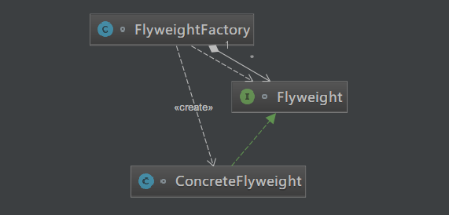

原文连接:https://www.cnblogs.com/cicada-smile/p/11846762.html
本文源码：GitHub·点这里 || GitEE·点这里
一、使用场景
应用代码
public class C01_InScene {
public static void main(String[] args) {
String c0 = "cicada" ;
String c1 = "cicada" ;
System.out.println(c0 == c1); // true
}
}String类型就是使用享元模式。String对象是final类型，对象一旦创建就不可改变。在JAVA中字符串常量都是存在常量池中的，JAVA会确保一个字符串常量在常量池中只有一个拷贝，其中c0和c1就是一个字符串常量。结果为：true，说明c0和c1两个引用都指向了常量池中的同一个字符串常量"cicada"。这样的设计避免了在创建N多相同对象时所产生的不必要的大量的资源消耗。
二、享元模式
1、基础简介
享元模式是对象的结构模式。享元模式以共享的方式高效地支持大量的细粒度对象。常用于系统底层开发，解决系统的性能问题。像数据库连接池，里面都是创建好的连接对象，在这些连接对象中有需要的则直接拿来用，避免重新创建。
2、模式图解

3、核心角色
- 抽象享元角色
给出一个抽象接口，以规定具体享元角色要实现的方法。
- 具体享元角色
实现抽象享元角色所规定出的接口。如果有内部状态的话，必须为内部状态提供存储能力。
- 享元工厂角色
负责创建和管理享元角色。必须保证享元对象可以被系统选择性共享。当一个客户端对象调用一个享元对象的时候，享元工厂角色会检查系统中是否已经有一个符合要求的享元对象。如果已经存在，直接返回该对象；如果系统中没有该享元对象，享元工厂角色就应当创建该享元对象。
4、内部外部状态
- 内部状态指对象共享出来的信息，存储在享元对象内部且不会随环境的改变而改变。
- 外部状态指对象得以依赖的一个标记，可以随环境改变而改变的、不可共享的状态。
5、源码实现
public class C02_FlyWeight {
public static void main(String[] args) {
FlyweightFactory factory = new FlyweightFactory();
Flyweight fly = factory.factoryMethod('c');
fly.printState("One");
fly = factory.factoryMethod('d');
fly.printState("Two");
fly = factory.factoryMethod('c');
fly.printState("San");
// 调用了三次工厂方法，只创建了两个对象
factory.poolInfo();
}
}
/**
* 抽象享元角色类
*/
interface Flyweight {
void printState (String state);
}
/**
* 具体享元角色类
*/
class ConcreteFlyweight implements Flyweight {
private Character innerState = null;
public ConcreteFlyweight (Character state){
this.innerState = state;
}
@Override
public void printState(String state) {
System.out.println("内部状态：" + this.innerState);
System.out.println("外部状态：" + state);
}
}
/**
* 享元工厂角色类
*/
class FlyweightFactory {
// 模拟数据池
private Map<Character,Flyweight> pool = new HashMap<>();
public Flyweight factoryMethod (Character state){
//先从缓存中查找对象
Flyweight fly = pool.get(state);
if(fly == null){
fly = new ConcreteFlyweight(state);
pool.put(state, fly);
}
return fly;
}
public void poolInfo (){
System.out.println("数据池："+pool);
}
}三、JDK应用场景
- 测试代码块
public class C03_Integer {
public static void main(String[] args) {
Integer c1 = Integer.valueOf(127),c2 = Integer.valueOf(127) ;
Integer c3 = new Integer(127),c4 = new Integer(127) ;
boolean flag1 = c1==c2 ,flag2 = c2==c3,flag3 = c3==c4 ;
// true;false;false
System.out.println(flag1+";"+flag2+";"+flag3);
Integer c5 = Integer.valueOf(222),c6=Integer.valueOf(222) ;
// false
System.out.println(c5==c6);
}
}- 源码分析
public static Integer valueOf(int i) {
if (i >= IntegerCache.low && i <= IntegerCache.high)
return IntegerCache.cache[i + (-IntegerCache.low)];
return new Integer(i);
}这里valueOf方法的意思就是，如果传入的数据在 (-128) 到 (127) 之间，则从缓存中直接返回，否则创建一个新的Integer对象。
四、模式总结
享元模式能够解决重复对象的内存浪费的问题，当系统中有大量相似对象，需要缓冲池时。不需一直创建新对象，可以从缓冲池里拿。这样可以降低系统内存，同时提高效率。经典的应用场景就是池技术，String常量池、数据库连接池、缓冲池等等都是享元模式的应用，享元模式是池技术的重要实现方式。享元模式使得系统更加复杂。为了使对象可以共享，需要时刻管理对象的状态变化，这使得程序的逻辑变得复杂。
五、源代码地址
GitHub·地址
https://github.com/cicadasmile/model-arithmetic-parent
GitEE·地址
https://gitee.com/cicadasmile/model-arithmetic-parent：享元模式1.png)